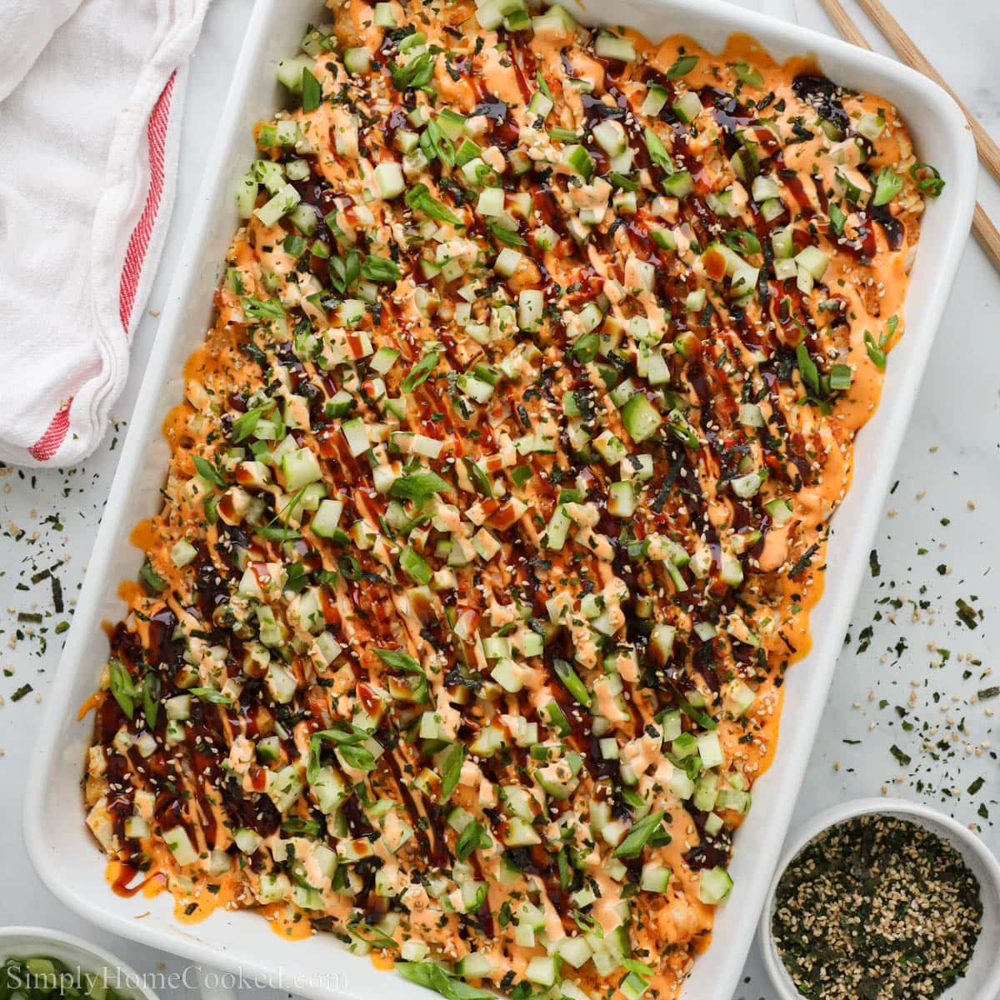

Sushi Bake Recipe

The image above presents the finished product of the sushi bake recipe
Ingredients
- 1 ounce dried shiitake mushrooms
- cooking spray
- 4 cups of cooked rice
- 6 tablespoons of aji nori furikake
- 8 ounce package imitation crabmeat shredded
- 1/2 cup of mayonnaise
- 1/2 cup of sour cream
- 1 ounce of tobiko
- 12 packages of seasoned korean seaweed
Steps
- Soak shiitake mushrooms in hot water until soft, 5 to 10 minutes.
- Meanwhile, set an oven rack about 6 inches from the heat source and preheat the oven's broiler. Lightly grease a 9x13-inch baking dish.
- Spread rice in the prepared pan; sprinkle furikake evenly over top.
- Drain mushrooms and squeeze out excess water. Mix mushrooms, imitation crabmeat, mayonnaise, sour cream, tobiko, and kamaboko together in a large bowl. Spread over furikake.
- Broil in the preheated oven until lightly browned on top, about 15 minutes. Remove from the oven and slice into 24 portions while in the baking dish.
- Spoon a generous mound from the baking dish onto a sheet of seaweed, wrap loosely, and consume immediately.